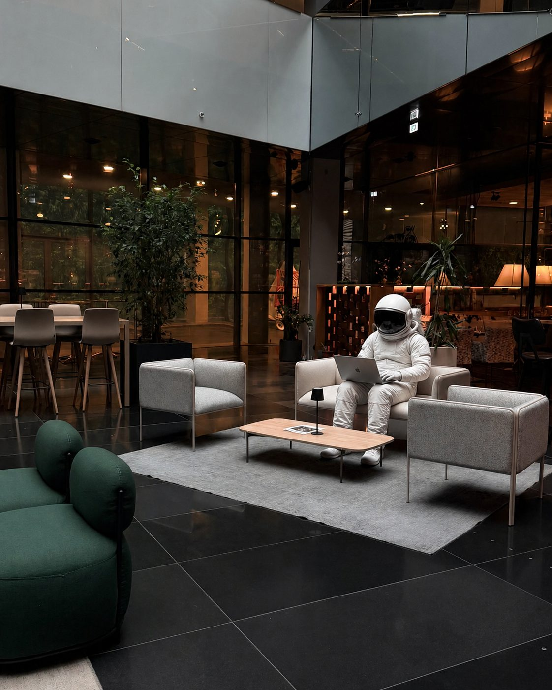

The future is unknown,
learn to navigate it:
⟶
Connect
Cross-industry leaders from 42+ nations — all in one room.
⟶
Learn
Keynotes, workshops and deep dives with those already navigating change.
⟶
Act
Leave with direction, deals and the connections to make them happen.